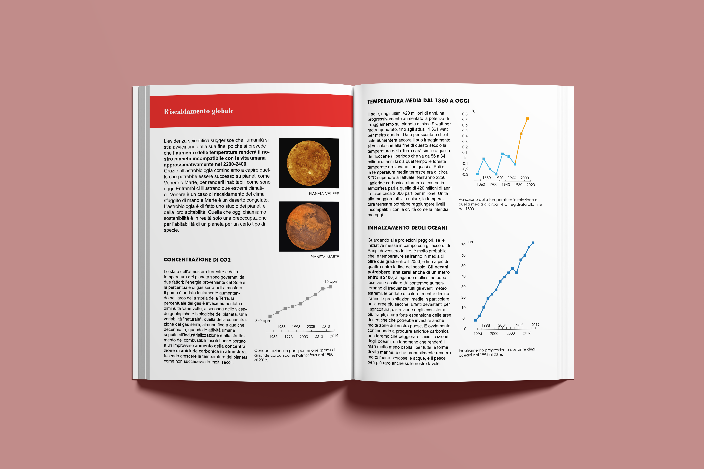
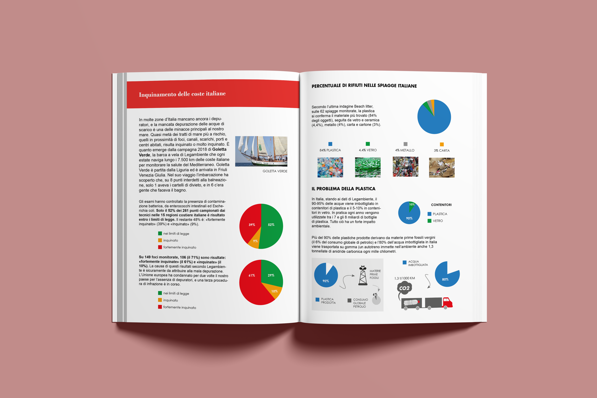
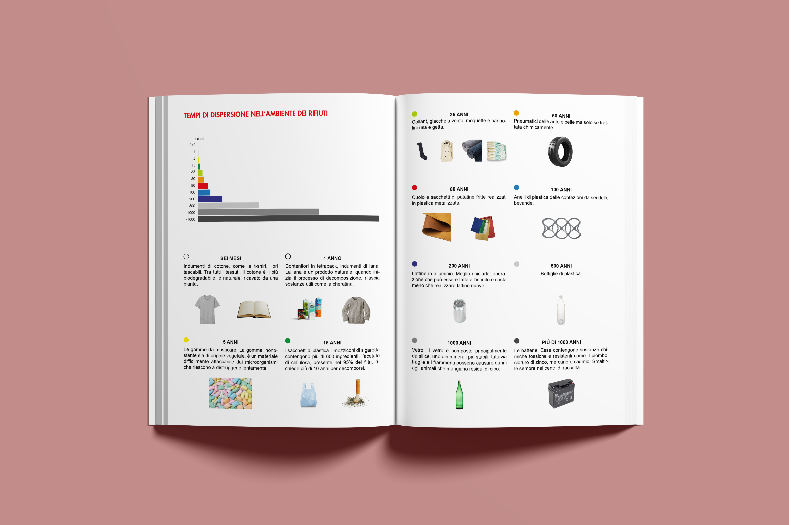
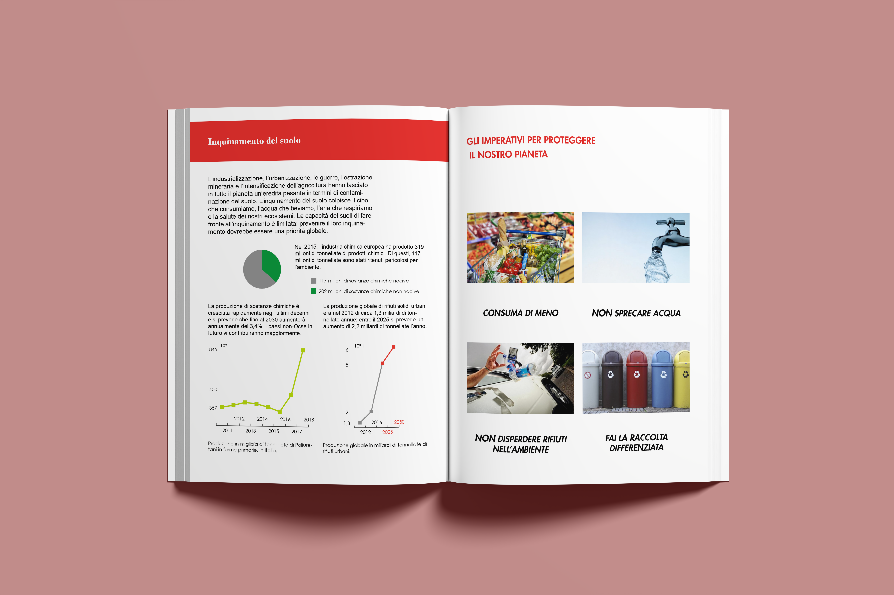
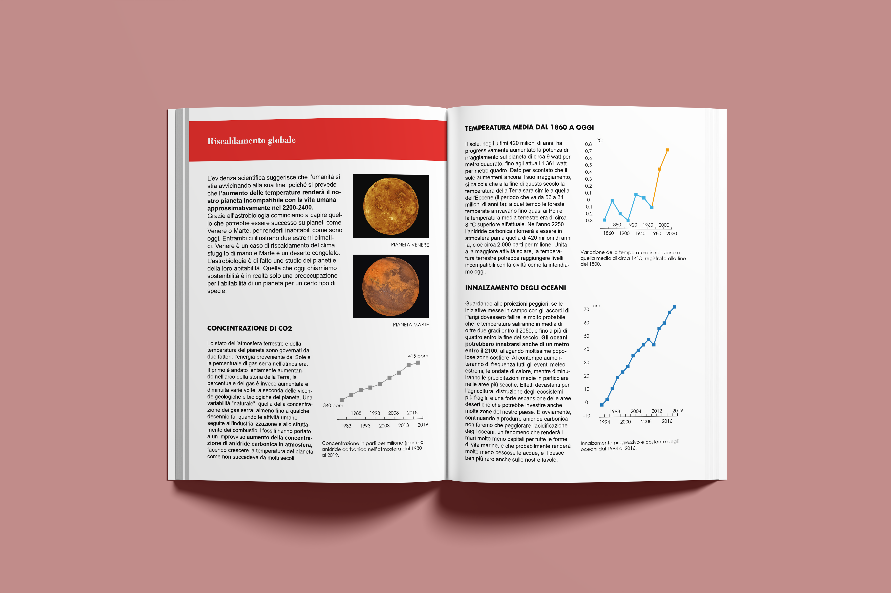
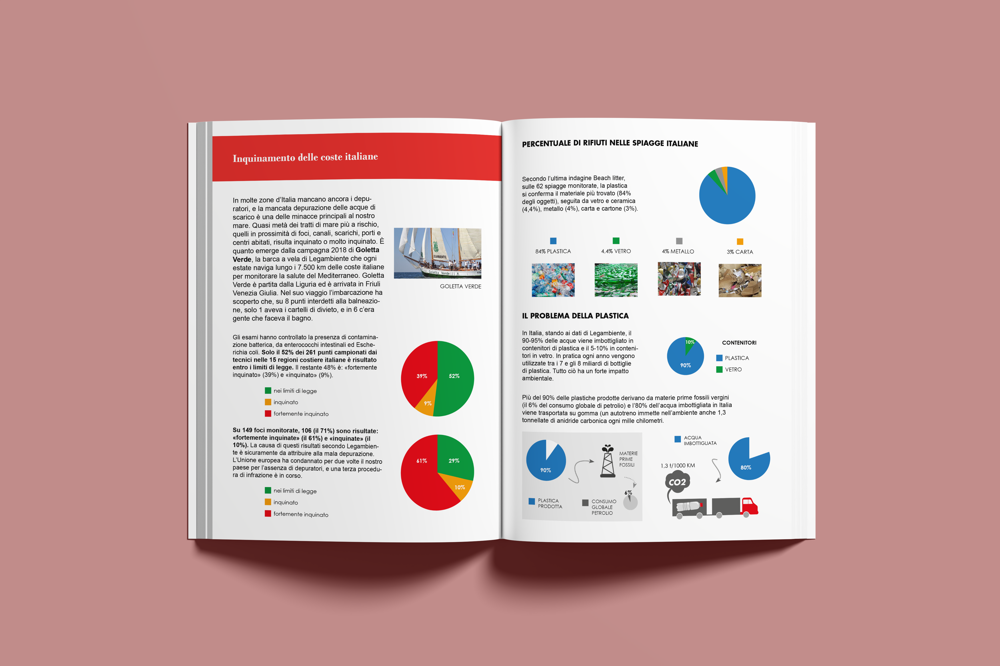
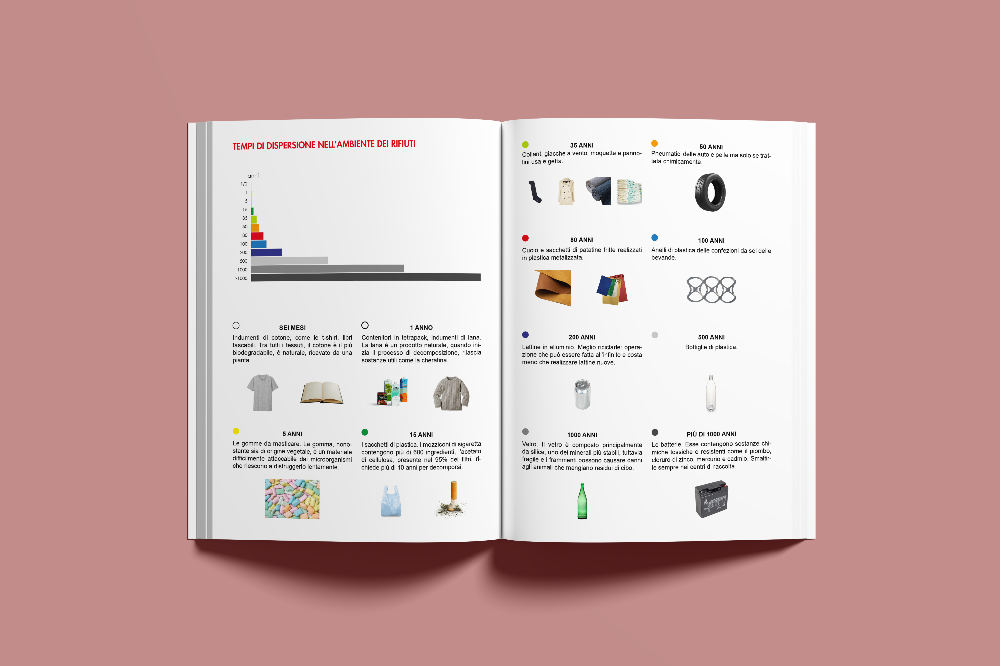
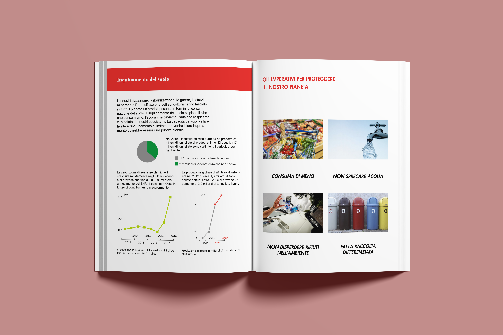

Il brief di questo lavoro accademico era quello di progettare un artefatto editoriale dedicato al destino della terra gestendo i contenuti e i dati forniti dal committente. L’immagine dell’artefatto doveva inoltre rispecchiare l’identità visiva di una realtà editoriale a scelta.


Osservando le copertine di Focus Extra, è possibile individuare gli elementi costanti e ricorrenti all’interno dell’immagine coordinata di questa rivista; per esempio l’immagine occupa 3/4 della superfice della copertina, mentre il restante 1/4 è dedicato alla testata. Il logotipo può essere declinato in due possibili varianti, ciò conferisce a questa rivista un’immagine dinamica ma coerente nell’utilizzo di alcune costanti come i font e i colori.
La copertina, progettata per l’inserto di un’ipotetica rivista Focus Extra, richiama alcuni elementi presenti nell’immagine complessiva della rivista.
Partendo dal riquadro rosso utilizzato dalla rivista Focus Extra come elemento dedicato all’approfondimento, è stato sviluppato il layout dell’inserto, concepito come un sottomultiplo della rivista, meno flessibile e più minimale, al fine di garantire una maggiore coerenza interna.
Formato finale: 135x190 mm.
Margini: 10 mm.
Legatura: punto metallico.
 








© Copyright 2023 by Maria Fiorello